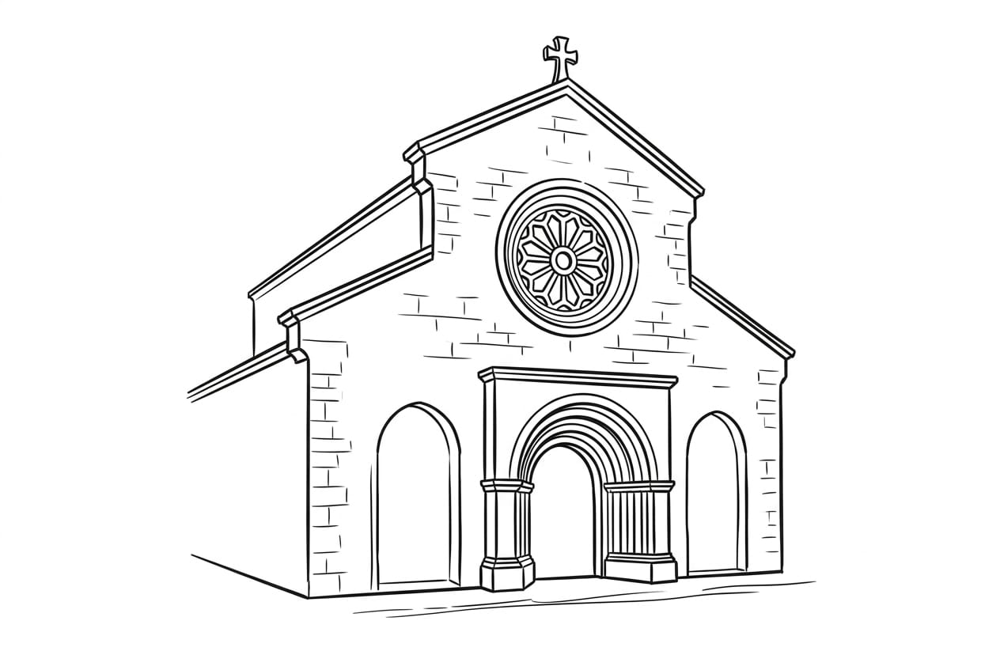
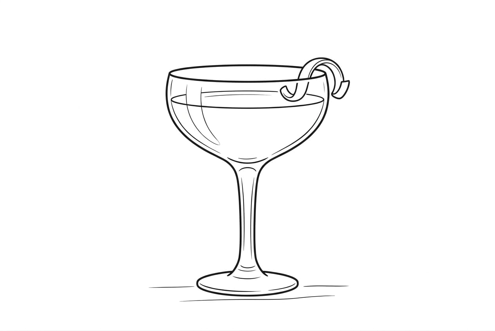
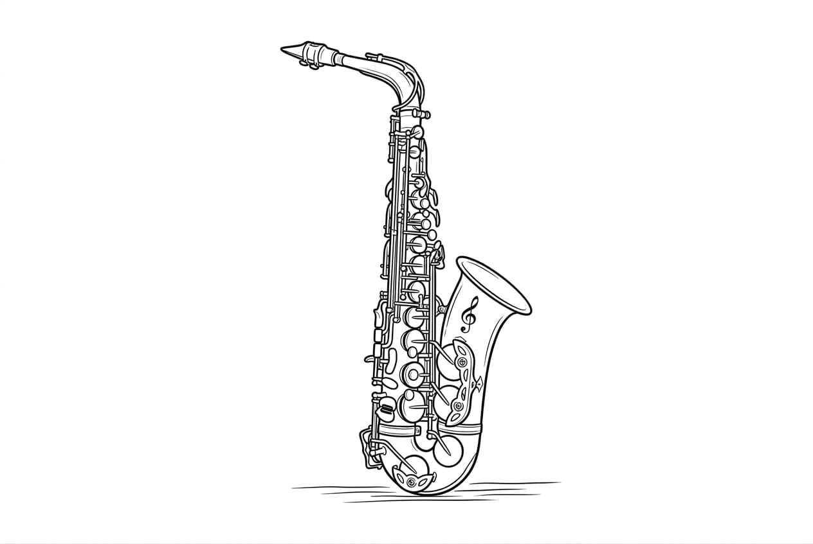
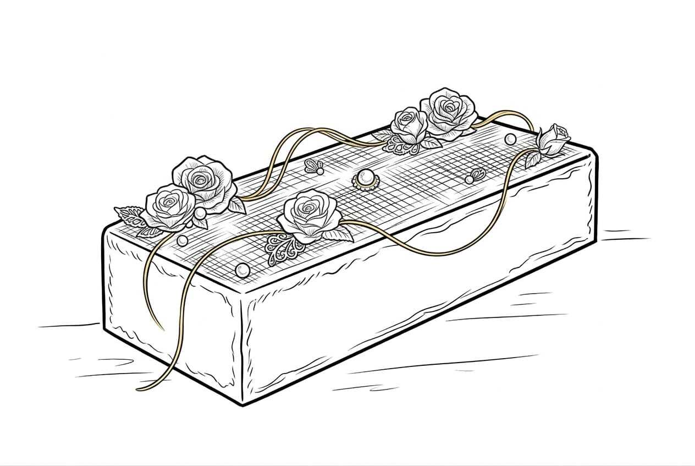

Convidamo-vos para celebrar connosco o dia mais bonito das nossas vidas.
Querida família e amigos
Há amores que parecem escritos muito antes de começarem. O nosso nasceu longe de casa, mas encontrou em Portugal o lugar certo para crescer. Agora, com o coração cheio, convidamo-vos a celebrar connosco este dia tão especial. Queremos vivê-lo rodeados das pessoas que mais amamos, entre sorrisos, abraços e memórias que ficarão para sempre.
Agenda

Cerimónia religiosa

Cocktail de boas-vindas
Almoço

Festa

Corte do bolo
Buffet
Despedida
Dress code
Não queremos impor cores, estilos ou regras. O mais importante para nós é que venham exatamente como se sentem mais felizes: confortáveis, confiantes e lindos, por dentro e por fora.
A vossa presença é aquilo que tornará este dia verdadeiramente especial, e para nós não há nada mais bonito do que ver cada pessoa que amamos sentir-se bem e sorrir de coração leve.
Confirmação de presença
Para nos ajudarem a preparar este dia com todo o carinho, pedimos que confirmem a vossa presença até ao dia 30/04.
Cada resposta será recebida com muito amor, porque saber que vamos partilhar este momento convosco torna tudo ainda mais especial. Mal podemos esperar por viver este dia de coração cheio, rodeados das pessoas que fazem parte da nossa história.
Local
Locais
Cerimónia religiosa:
Igreja do Castelo — Lourinhã
Celebração:
Quinta do Pateo — Dois Portos, Torres Vedras
Estamos profundamente apaixonados, felizes e gratos pela vida que nos trouxe até aqui.
Este dia será o início de um novo capítulo, e não conseguimos imaginar forma mais bonita de o começar do que convosco ao nosso lado. Obrigado por fazerem parte da nossa história e por levarem convosco tanto amor para este dia.